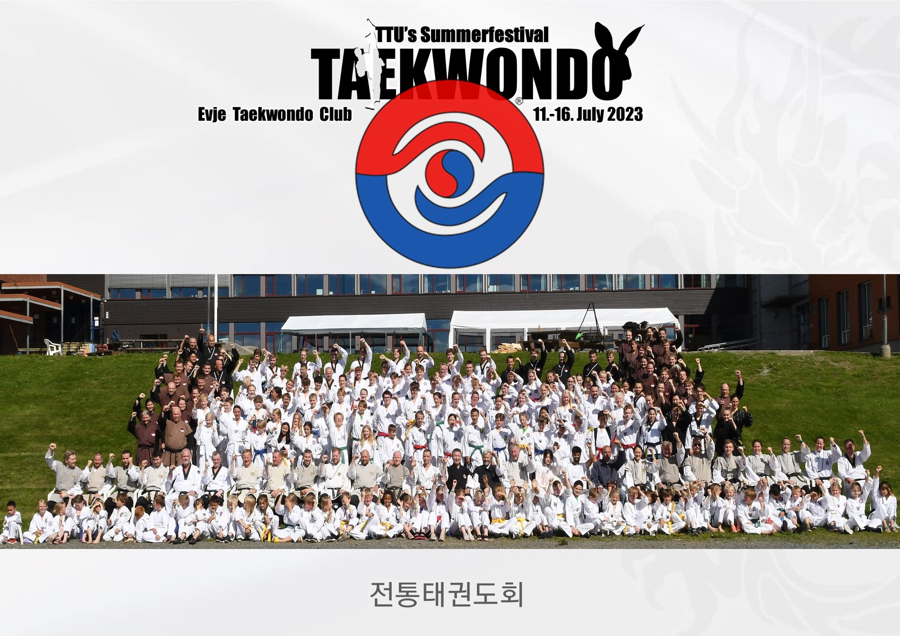

Arrangement
Grandmaster Chos Sommerfestival 2023

Sommerfestival 2023 vil bli arrangert av Evje Taekwondo Klubb på Evje i Setesdal.
Den vil vare fra onsdag 12. juli til søndag 16. juli
Sommerfestivalen er åpen for alle taekwondoutøvere. Som tidligere år blir det varierte treninger, både tema-treninger innen Taekwondo, men også andre stilarter som Sun-mudo, Gyong-dang og tradisjonell koreansk dans.
I år får vi blant annet besøk av mastere fra Sør-Korea, og selvsagt mange av TTU’s egne mastere fra Norge og Danmark.
Vi håper mange barn kommer på leir, da det blir fullt opplegg for barn, med mange treninger, og noe annen aktivitet på ettermiddag. For foreldre vil det i år bli egne treninger, der det ikke trengs noen forkunnskap.
Vi ønsker at mange fra Ringerike TKD skal delta, både barn og voksne! Det er også satt av penger i klubben til å våre utøvere økonomisk, slik at flest mulig får muligheten til å være med. Se arrangement i SPOND-appen, for uforpliktende påmelding
Påmelding
Påmeldingen til årets sommerleir har nå åpnet på www.ttu.no Alle som skal delta på sommerleiren må melde seg på og betale for leiren via nettsiden til TTU. Sommerleiren vil i år bli arrangert på Evje 12-16.juli. Offisiell oppdatert informasjon inkludert priser finner du på TTU.noHvem kan delta?
Alle klubbens medlemmer og foresatte kan delta på sommerleir. Men klubben har satt en grense på 12 år for de som reiser uten foresatte. Det er viktig å merke seg at det er TTU som arrangerer leiren og vi som klubb er kun deltagere. Klubben har ikke mulighet til å være barnevakt på leiren, men vi vil selvfølgelig se etter og ta vare på våre medlemmer. Ønsker medlemmer under 12 år å reise så må foresatte bli med og ta vare på sine barn eller snakke med andre foresatte og dele på dette. Vi vil sørge for innkvartering på samme sted for alle våre medlemmer. Noen av de voksne skal også sove i telt og vil sette opp en liten camp Ringerike. Geir, Reinhardt og Øistein med familie vil overnatte på denne måten.Konkurranse på leieren
Det er også nå åpnet for påmelding til Kukkiwon-cup som blir avholdt 13. juli. Her vil det være konkurranse i mønster og knekking av plater. Det er første gang denne konkurransen avholdes, slik at en del er uklart enda og klubben har ikke oversikt på alt her. Men mer informasjon forventes å komme via websiden til TTU. Disse konkurransene kan alle bli med på. Registrer deg via ttu.no om du har lyst til å deltaTransport
Evje ligger et godt stykke unna Hønefoss, ca. 5 timer å kjøre. Klubben ønsker å hjelpe til med transport for de som trenger det. Vi planlegger å leie inn en buss med 17 seter som Øistein, som har bussførerkort, vil kjøre frem og tilbake. Vil du sitte på med bussen så meld deg på via Spond-gruppen vi setter opp. Det er en egenandel på kr 950,- per person som da dekker transporten frem og tilbake. Vi må ha minimum 12 personer som vil sitte på i bussen for å gjøre dette.Økonomisk støtte til alle som deltar på sommerleir i år 😊
Klubben kjørte en Spond-kampanje hvor inntektene skulle gå til å støtte de som reiser på sommerleir. Alle inntektene fra denne kampanjen skal tilbake til medlemmene. For å få fordelt dette på en rettferdig måte blant deltagerne så vil dette bli utbetalt til hver enkelt deltager/familie etter sommerleiren fra klubben. TTU arrangerer leieren og ikke klubben derfor må dette holdes adskilt. Klubben trenger også et bilag til klubbens regnskap på pengene vi betaler ut. Nøyaktig hvor mye hver enkelt får i støtte er vanskelig å si før vi vet hvor mange som faktisk deltar. Men det ser ut til å bli ca. 800-1000 kroner i støtte per deltager. Geir vil samle inn kontonummer under/i etterkant av leieren og sørge for utbetaling. Sommerfestivalen er årets høydepunkt for mange, og vi håper flest mulig har lyst til å delta! Brosjyren for årets sommerleir med alt av informasjon finner du ved å trykke på bildet under.
Brosjyren på engelsk finner du her: